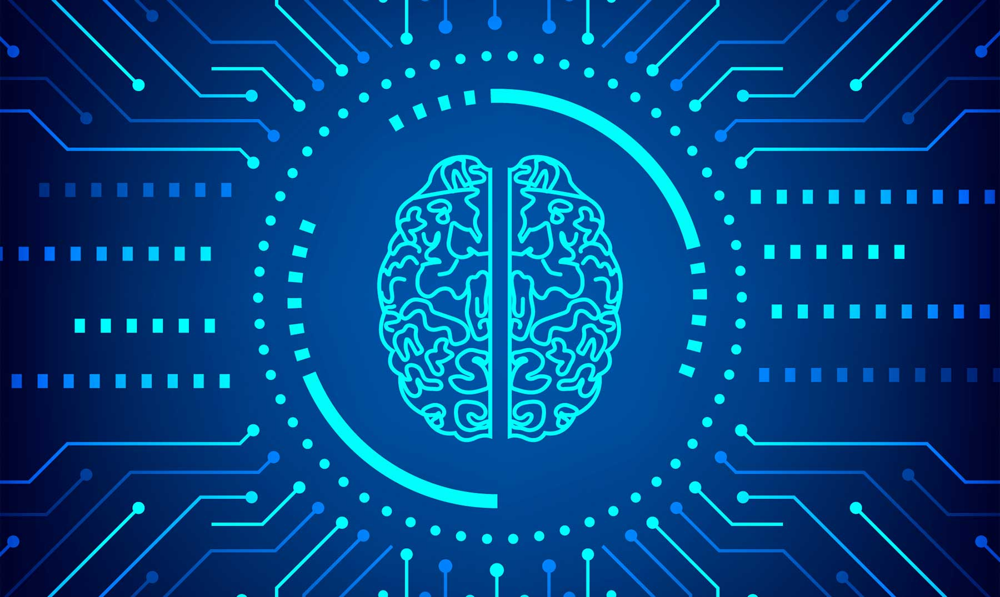
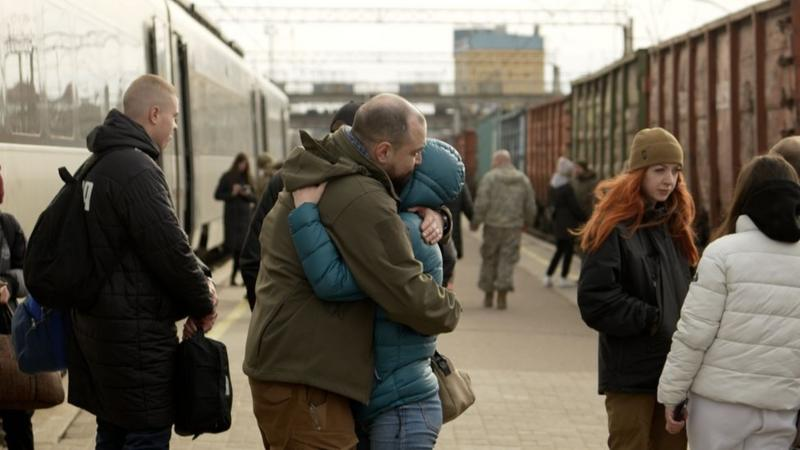

Título |
Autor |
Fecha de Publicación |
Puntuación |
|---|---|---|---|
| Las «habilidades blandas» ganan importancia en tecnologías de la información | Swissinfo.ch | 10 de diciembre de 2022 | 5 |
| Las 3 etapas de la Inteligencia Artificial | BBC News Mundo | 29 de mayo de 2023 | 4 |
| La IA generativa | AWS | 2023 | 5 |
| Asesinan a líder juvenil y excandidato al Concejo municipal de Caldas, Antioquia | El tiempo | 12 de marzo de 2024 | 4 |
| "Sabemos lo que se viene": los temores en el este de Ucrania ante el rápido avance de las tropas rusas | BBC News | 12 de marzo de 2024 | 3 |
| La muerte Akira Toriyama reafirma una horrible verdad sobre la industria: los autores de manga viven 20 años menos que el hombre japonés medio | ESPINOF | 12 de marzo de 2024 | 5 |
Las «habilidades blandas» ganan importancia en tecnologías de la información
10 DE DICIEMBRE DE 2022 | Luis Alejandro Amaya E.
Redacción América, 11 dic (EFE).- Las llamadas «habilidades blandas» tienen cada día más preponderancia a la hora del trabajo en las empresas de tecnologías de la información (TI) y quien carezca de ellas, parte con desventaja en el mundo laboral, aseguran los expertos.
Comunicación, colaboración, negociación, inteligencia emocional y liderazgo son conceptos que hasta hace poco se pensaba se pensaba que estaban desvinculados del mundo de la informática, pero que ahora son cada vez más necesarios para ser competitivos.
**CAPACIDAD DE COLABORACIÓN**
Cuando se desarrolla software, el usuario exige que se cumplan un montón de requisitos que exceden la capacidad de una sola persona. Un solo desarrollador no puede cumplir con lo mínimo que exige un usuario. «Si entiendes el negocio de desarrollo de software, sabes que no puedes jugar solo, que necesitas un equipo», apunta Darío Macchi.
**RECALCAR LA CREATIVIDAD**
Se da por sentado que el proceso de creatividad es inherente al trabajo de creación e implementación de software, pero hay que recalcar el toque de distinción al producto que se elabora. «Si las personas no están inspiradas, si no están en un entorno que les permita ser creativas, no van a ser buenos desarrolladores», sostiene Macchi.
**TENER INTELIGENCIA EMOCIONAL**
Los profesionales de IT son como cualquiera otros, con sus altas y bajas, y deben aprender a lidiar con estas sensaciones para que no se dañe el trabajo en equipo. «Sería óptimo si todos fuésemos robots, ¿no? Es imposible que uno pueda apretar un botón y anular el enojo, la angustia. ¿Cómo suprimir todos estos sentimientos que brotan cuando ocurren situaciones? Uno es persona antes que profesional», declara Caldano, quien antes se desempeñó en empresas como Grupo MSA S.A.y GlobalLogic Latinoamérica. Todo equipo necesita un guía que muestre el camino, pero no necesariamente el papel del liderazgo tiene que recaer sobre una sola persona.
«El hecho de que desde hace unos veinte años las metodologías ágiles hayan entrado con fuerza a nuestro sector hace que justamente la figura del «coach» utópicamente no debería existir. Los equipos deberían autogestionarse solos y tener liderazgos rotativos», concluye Macchi. EFE
Artículos relacionados
Las 3 etapas de la Inteligencia Artificial
29 DE MAYO DE 2023 | Veronica Smink
Desde que se lanzó a finales de noviembre 2022, ChatGPT, el chatbot que usa inteligencia artificial (IA) para responder preguntas o generar textos a pedido de usuarios, se ha convertido en la aplicación de internet con el crecimiento más rápido de la historia.
La masiva popularidad de ChatGPT, desarrollado por la empresa OpenAI, con respaldo financiero de Microsoft, ha despertado todo tipo de discusiones y especulaciones sobre el impacto que ya está teniendo y que tendrá en nuestro futuro cercano la inteligencia artificial generativa.
Desde estudiantes que los usan para hacerle los deberes hasta políticos que les encomiendan sus discursos -el representante demócrata Jake Auchincloss estrenó el recurso en el Congreso de EE.UU.- o fotógrafos que inventan instantáneas de cosas que no ocurrieron (e incluso ganan premios por ello, como el alemán Boris Eldagsen, quien obtuvo el primer puesto en el último Sony World Photography Award por una imagen creada por IA).
El fenómeno ha llevado a una revolución de los recursos humanos, con empresas como el gigante tecnológico IBM anunciando que dejará de contratar a personas para cubrir cerca de 8.000 puestos de trabajo que podrán ser manejados por IA.
I. Inteligencia artificial estrecha (ANI)
La categoría más básica de IA es más conocida por sus siglas en inglés: ANI, por Artificial Narrow Intelligence. Se llama así porque se enfoca estrechamente en una sola tarea, realizando un trabajo repetitivo dentro de un rango predefinido por sus creadores. Los sistemas de ANI generalmente se entrenan utilizando un gran conjunto de datos (por ejemplo de internet) y pueden tomar decisiones o realizar acciones basadas en ese entrenamiento. Una ANI puede igualar o superar a la inteligencia y eficiencia humana pero solo en esa área específica en la que opera. Un ejemplo son los programas de ajedrez que usan IA. Son capaces de vencer al campeón mundial de esa disciplina, pero no pueden realizar otras tareas.
II. Inteligencia artificial general (AGI)
Esta categoría -Artificial General Intelligence- se alcanza cuando una máquina adquiere capacidades cognitivas a nivel humano. Es tal la creencia de que estamos al borde de alcanzar este nivel de desarrollo, que en marzo pasado más de 1.000 expertos en tecnología pidieron a las empresas de IA que dejen de entrenar, por al menos seis meses, a aquellos programas que sean más poderosos que GPT-4, la versión más reciente de ChatGPT. "Los sistemas de IA con inteligencia que compite con la humana pueden plantear profundos riesgos para la sociedad y la humanidad", advirtieron en una carta abierta, entre otros, el cofundador de Apple, Steve Wozniak, y el dueño de Tesla, SpaceX, Neuralink y Twitter, Elon Musk (quien fue uno de los cofundadores de Open AI antes de renunciar de la junta por desacuerdos con la conducción de la compañía).
III. Súper Inteligencia Artificial (ASI)
La preocupación de estos científicos informáticos tiene que ver con una teoría muy establecida que sostiene que, cuando alcancemos la AGI, poco tiempo después se arribará al último estadio en el desarollo de esta tecnología: la Artificial Superintelligence, que ocurre cuando la inteligencia sintética supera a la humana. El filósofo de la Universidad de Oxford y experto en IA Nick Bostrom define a la súper inteligencia como "un intelecto que es mucho más inteligente que los mejores cerebros humanos en prácticamente todos los campos, incluida la creatividad científica, la sabiduría general y las habilidades sociales". La teoría es que cuando una máquina logre tener una inteligencia a la par con la humana, su capacidad de multiplicar esa inteligencia de forma exponencial a través de su propio aprendizaje autónomo hará que en poco tiempo nos supere ampliamente, alcanzando la ASI.
Artículos relacionados
La IA generativa
2023. | Amazon Web Services
¿Qué es la IA generativa?
La inteligencia artificial generativa (IA generativa) es un tipo de inteligencia artificial que puede crear ideas y contenidos nuevos, como conversaciones, historias, imágenes, videos y música. Las tecnologías de IA intentan imitar la inteligencia humana en tareas informáticas no tradicionales, como el reconocimiento de imágenes, el natural language processing (NLP, procesamiento de lenguaje natural) y la traducción. La IA generativa es el siguiente paso en la inteligencia artificial. Puede entrenarla para que aprenda lenguaje humano, lenguajes de programación, arte, química, biología o cualquier tema complejo. Reutiliza los datos de entrenamiento para resolver nuevos problemas. Por ejemplo, puede aprender vocabulario en inglés y crear un poema a partir de las palabras que procesa. Su organización puede utilizar la IA generativa para diversos fines, como los chatbots, la creación de medios y el desarrollo y diseño de productos.
¿Por qué es importante la IA generativa?
Las aplicaciones de IA generativa como ChatGPT han captado la atención y la imaginación generalizadas. Pueden ayudar a reinventar la mayoría de las experiencias y aplicaciones de los clientes, crear nuevas aplicaciones nunca antes vistas y ayudar a los clientes a alcanzar nuevos niveles de productividad. Según Goldman Sachs, la IA generativa podría impulsar un aumento del 7 por ciento (o casi 7 billones de dólares) en el producto interno bruto (PIB) mundial. También anticipan que podría aumentar el crecimiento de la productividad en 1,5 puntos porcentuales en 10 años. A continuación, presentamos algunos beneficios más de la IA generativa.
Acelera la investigación
Los algoritmos de la IA generativa pueden explorar y analizar datos complejos de nuevas formas. Por lo tanto, los investigadores pueden descubrir nuevas tendencias y patrones que, de otro modo, no serían evidentes. Estos algoritmos pueden resumir contenido, esbozar múltiples vías de solución, proporcionar muchas ideas y crear documentación detallada a partir de notas de investigación. Esta es la razón por la que la IA generativa mejora drásticamente la investigación y la innovación.
Mejora las experiencias de los clientes
La IA generativa puede responder de forma natural a conversaciones con humanos y servir como una herramienta para el servicio al cliente y la personalización de los flujos de trabajo de los clientes. Por ejemplo, puedes usar chatbots, bots de voz y asistentes virtuales con tecnología de inteligencia artificial que respondan con mayor precisión a los clientes para resoluciones en el primer contacto. Pueden aumentar la participación de los clientes al presentar ofertas seleccionadas y comunicaciones de forma personalizada.
¿Cómo funcionan los modelos de IA generativa?
Los modelos tradicionales de machine learning eran discriminativos o se centraban en clasificar los puntos de datos. Intentaban determinar la relación entre los factores conocidos y desconocidos. Por ejemplo, observan imágenes (datos conocidos como la disposición de los píxeles, la línea, el color y la forma) y las asignan a palabras (el factor desconocido). Matemáticamente, los modelos funcionaban identificando ecuaciones que podían mapear numéricamente factores desconocidos y conocidos como variables x e y.
Los modelos generativos llevan esto un paso más allá. En lugar de predecir una etiqueta según algunas características, intentan predecir características según una etiqueta determinada. Matemáticamente, el modelado generativo calcula la probabilidad de que x e y ocurran juntos. Aprende la distribución de las diferentes características de los datos y sus relaciones.
Artículos relacionados
Asesinan a líder juvenil y excandidato al Concejo municipal de Caldas, Antioquia
12 DE MARZO DE 2024 | LAURA ROSA JIMÉNEZ VALENCIA
El crimen fue perpetrado por sicarios en moto que llegaron hasta un establecimiento de comercio.
El crimen de este joven de 32 años ocurrió en la tarde de este lunes, 11 de enero, en un establecimiento abierto al público que está ubicado en la vereda la Tolva. Al momento del ataque armado se encontraba reunido con un grupo de amigos.
De acuerdo con información suministrada, el homicidio fue perpetrado por dos sujetos armados que llegaron al sitio a bordo de una motocicleta y le dispararon en repetidas oportunidades.
Castrillón Chicaiza fue presidente de la Junta de Acción Comunal de la vereda Santa Cruz y era el vicepresidente del acueducto multiveredal La Quiebra del municipio. Desde el partido Nuevo Liberalismo, colectividad por la que se lanzó al Concejo en las pasadas elecciones regionales, lamentaron la muerte del joven y pidieron a las autoridades investigar lo ocurrido.
"Desde el Nuevo Liberalismo Antioquia repudiamos el asesinato la tarde del lunes 11 de marzo de Cristian Alberto Castrillín Chicaiza líder social y ambiental, presidente de la Junta de Acción Comunal del barrio Santa Cruz, excandidato al Concejo municipal y orientador del NL", dice la comunicación del partido. Con este caso, son 31 los líderes que han sido asesinados en lo corrido de 2024.
Artículos relacionados
"Sabemos lo que se viene": los temores en el este de Ucrania ante el rápido avance de las tropas rusas
12 DE MARZO DE 2024 | James Waterhouse
El miedo se extiende
Gente en ciudades como Pokrovsk, Kostantínovka o Kramatorsk están viendo cómo el ejército ruso se acerca e, incluso, contemplando una posible ocupación. Mariya y su madre Tetyana pueden darse cuenta de cómo las cosas se están poniendo más difíciles a medida que avanza el ejército ruso. La ciudad está llena de signos que anuncian una amenaza en camino a unos 30 kilómetros de distancia. Casi cada calle de la ciudad tiene un edificio destruido. Trabajadores están reemplazando los paneles dorados de la iglesia principal después de que un misil destruyera parte de la edificación. La ansiedad está llenando el aire frío de esta ciudad que algunas vez fue el corazón industrial de la ex Unión Soviética. Rusia está destruyendo las ciudades de forma lenta y está intentando tomarlas. Y eso es lo que más temen los que viven allí.
Zona de evacuación
Mientras se avanza por sus bosques extensos y densos, su terreno áspero, se tiene la sensación de que estamos a punto de ver la peor cara de este conflicto. Se puede escuchar artillería pesada tan cerca como a 40 kilómetros de distancia, por lo que el estrépito de los cañones es constante Acá se puede ver la erosión del territorio ucraniano. Columnas de humo que emergen desde Avdíivka, la ciudad tomada hace poco y Horlivka, que fue tomada en 2014. Rusia está utilizando su tamaño, superioridad aérea y mayor reserva de munición para mantener su ofensiva, mientras que la ayuda de Occidente a Ucrania se está acabando o está siendo retenida por políticas domésticas. Cerca de estas ciudades hay un valle con muchas reservas. En este paisaje Ucrania dice que va a estabilizar su frente de guerra.
Diciendo adiós
La evacuación de las poblaciones en el frente de guerra es obligatoria para las familias con niños. Pero más allá de eso, 15 niños permanecen en Toretsk. Anton Pron del escuadrón encargado de la evacuación -que es conocido como los Ángeles Blancos- dice que la situación se agrava cada día.“Hay estallidos y disparos de artillería pesada todos los días. La aviación del enemigo está trabajando todo el tiempo. Los rusos están bombardeando zonas residenciales”, explica. Hoy en día, la estación de tren de la cercana ciudad de Kramatorsk es la última parada para las tropas que llegan y, cada vez más, para los civiles que parten cargados con bolsas. Los vagones con mercancías están alineados en los andenes de la estación de Kramatorsk para protegerse de los ataques rusos.
En 2022, al menos 61 personas murieron aquí a causa de un accidente. En la calle todavía quedan marcas de metralla quemadas. Nos encontramos con Alla, que está esperando su tren a Kyiv . "Hace un año pensábamos que recibiríamos ayuda de Occidente y que nuestra contraofensiva funcionaría, pero ya no", dice.
"La gente solía creer, pero ahora ya no."
Ucrania espera que estas tierras algún día sean un lugar seguro para vivir nuevamente. En este momento no está claro a qué regresarán estas personas que deben partir. Si los invasores rusos ganan más impulso en la región de Donetsk, la pregunta de dónde se van a detener será cada vez más difícil de responder.
Artículos relacionados
La muerte Akira Toriyama reafirma una horrible verdad sobre la industria: los autores de manga viven 20 años menos que el hombre japonés medio
12 DE MARZO DE 2024 | Mariló Delgado
El 1 de marzo falleció Akira Toriyama, y la despedida al creador de 'Dragon Ball' parece que duele más porque el legendario mangaka tenía tan solo 68 años. No es el primer autor de manga que muere relativamente joven, y precisamente a raíz de su muerte estos días se ha vuelto a reavivar el debate sobre las condiciones extremas en las que se crean nuestras series favoritas.
No se puede con tanto
Kentaro Miura, el creador de 'Berserk', tan solo tenía 54 años cuando falleció en 2021. La salud de Yoshihiro Togashi es pésima desde hace años y le obliga a detener la publicación de 'Hunter x Hunter' durante periodos larguísimos de tiempo. Eiichiro Oda, el autor de 'One Piece', padece de diabetes y gota y apenas come ni duerme para centrarse en terminar su manga. Masashi Kishimoto dormía unas tres horas al día mientras trabajaba en 'Naruto'.
Estos son algunos ejemplos (un poco extremos) de mangakas famosos y de cómo su trabajo ha afectado a sus vidas. Y es que un bloggero japonés ha empezado a recoger datos sobre creadores de manga y sus fechas de fallecimiento y ha comprobado que la esperanza de vida de un mangaka medio es de 62,6 años. Que encima resulta todavía más baja si la comparamos con los 83 años que vive un hombre japonés promedio, casi veinte años más.
La lista recoge un total de 219 mangakas, e incluye a demasiados que han fallecido con treinta y cuarenta años. E incluso dentro de la propia industria se ha aceptado como algo normal y esperable que los autores van a dejarse la salud por el bien de su obra.
Muchas de las grandes series de manga se publican semanalmente, con los autores teniendo que terminar un mínimo de 20 nuevas páginas a un ritmo vertiginoso. Mala dieta, pocas horas de sueño, malas posturas, mucho estrés y una vida entera pegada a la mesa de dibujo al final terminan pasando factura demasiado pronto.
Tampoco ayuda que los propios seguidores de los mangas sean los primeros que reaccionan negativamente cuando su serie favorita se pausa temporalmente, o se salta una semana de publicación. Aunque por suerte, muchos fans hacen cada vez más ruido para demandar unas mejores condiciones y presionar para que las editoriales cuiden de sus autores.